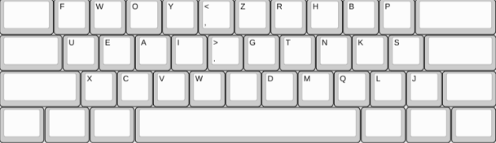
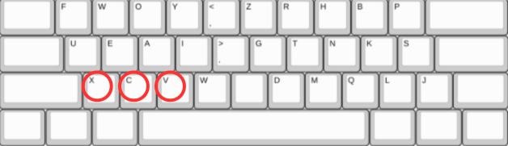
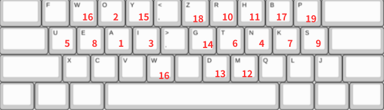
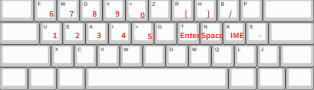

Hello nitake.
二竹式は今までのqwertyによる束縛をフォイっと(fwoy,)払ってくれます()
そして、AHK,PowerToysのKeyboard Manager,WINDOWSではなく
MACをお使いの方はKarabiner-Elementsなどを使うことで
無料で導入することができ、いつでもこれを無効にすることができます

特徴
特徴 1
特徴 2
特徴 3
1.xcvの場所
xcvはコピペなどで使用率が高いため,端っこの方に残しました。
ただ、zはどうしてもタイピングで使うので右側に入れました。

2.打ちやすさ
日本語入力でよく使うキーを指の届きやすいところに配置しました。
そして、個人的にBSをよく使うのでSpaceをBSにしました（自分基準）

↑の数字は使用頻度
3.記号
二竹式はSpace長押しで他のキーを押すと記号や数字,Enter,IMEのオンオフなど
様々なことが手を動かさないでできてしまいます。
(PowerToysのKeyboard Managerは使えません)

AHKのコード
詳細
後で作る
ここからは実際に二竹式を体験できます。論理配列をqwertyに設定してください。
読み込み中...
スコア: 0
残り時間: 60秒
もう一度プレイ